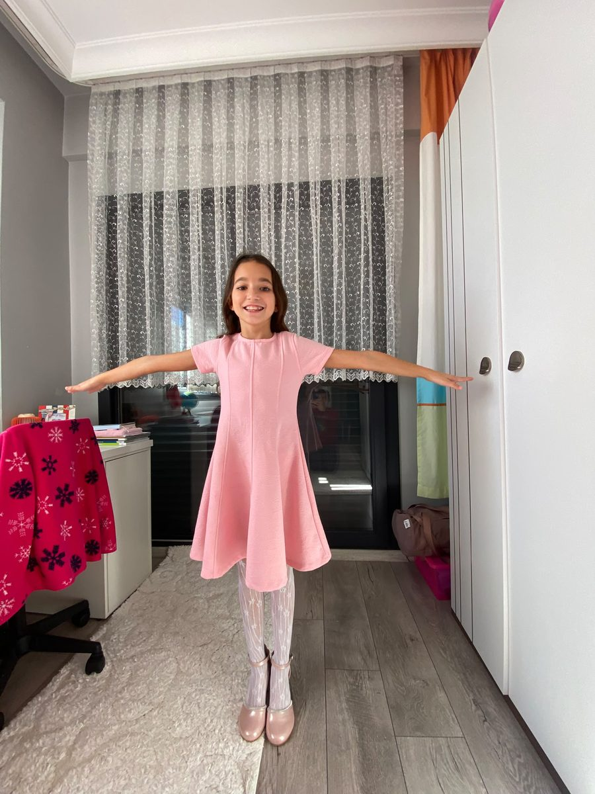

Pastayı ve hediyeyi alıp hemen eve gel! Misafirler geldi, Derin mumları üfleyecek!
YAA HAKKINDASIN! Ben şu an ofiste unuttum!!
İşe dalmışsın. Kardeşimin 10. yaş doğum günü tamamen aklımdan çıkmış.
Şimdi elinde devasa, dengesiz bir pasta kutusu ve son model bir hediye paketiyle
sokaktasın. Partiye 20 dakikan var. Hedef: pastayı ve hediyeyi sapasağlam eve ulaştır.
SON DİLİM
SON DİLİM
WASD koşFARE pastayı dengeleSPACE zıplaSHIFT hızlı koş
NASIL OYNANIR
WASD: Roblox tarzı — kameranın baktığı yöne göre koş. SAĞ FARE TUŞU basılı tutup sürükle: kamerayı döndür. Karakter baktığın yöne döner. Q / E: pasta kutusunu sola / sağa eğ — iki elinle tut gibi düşün.
Denge çubuğu yeşil bölgedeyken bırak. SHIFT: daha hızlı koş (ama daha çok sarsılır). SPACE: zıpla (arabaların, boruların, rampaların üstünden atlamak için).
Engel: kutu çarpışır, çevreye çarpar, köşeye sıkışırsa krem kayar →
denge çubuğu dolar → PASTA KAZASI! Son kontrol noktasına dönersin.
Süre: sağ üstteki sayaç. Süre biterse kötü son, yetişirse iyi son.
DURAKLATILDI
PASTA KAZASI!

Abi, bari pastanın üzerine bir mum dikelim, böyle de yeriz! 😄